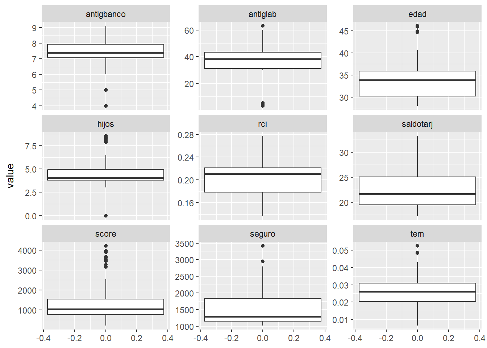
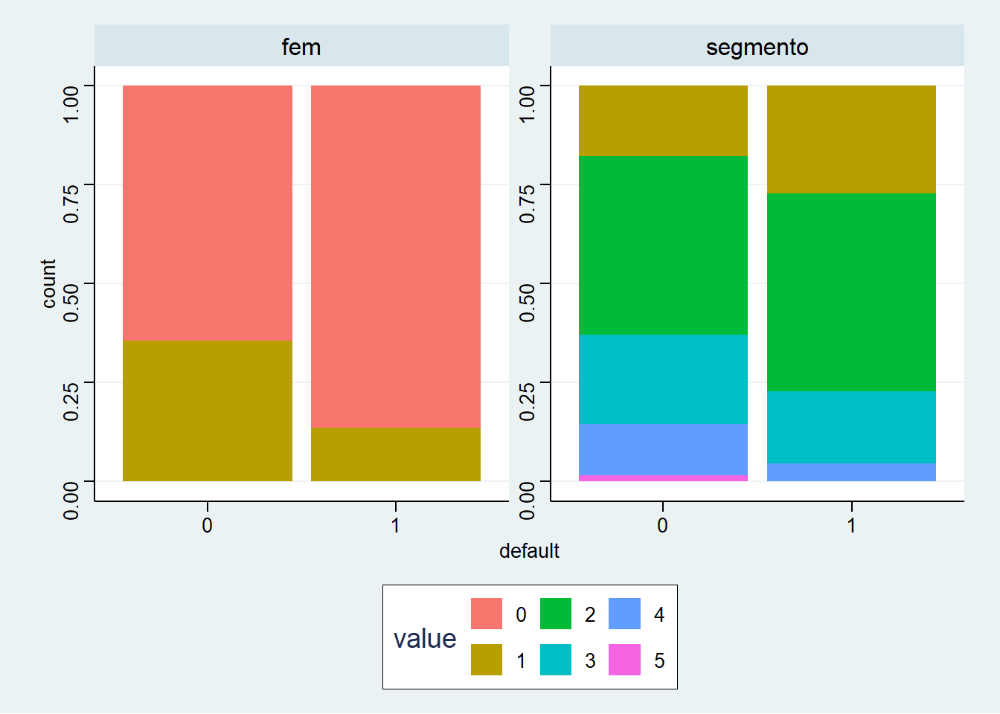
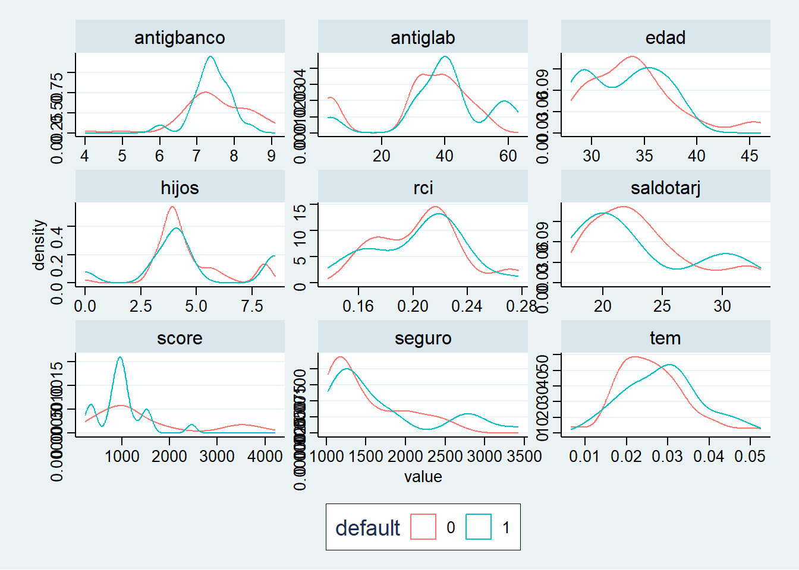

Code
# Paquete tidyverse para manipular datos y graficar.
library(tidyverse)# Paquete tidyverse para manipular datos y graficar.
library(tidyverse)Levanto la base de excel:
data <- readxl::read_excel('base 2024 unsam.xlsx')Descripción de las variables
str(data)tibble [84 × 12] (S3: tbl_df/tbl/data.frame)
$ default : num [1:84] 0 1 0 0 0 0 0 1 1 0 ...
$ tem : num [1:84] 0.0389 0.0214 0.0265 0.0236 0.0193 ...
$ antiglab : num [1:84] 3.08 31.03 3.1 30.89 3.08 ...
$ seguro : num [1:84] 1317 1259 1205 1193 1152 ...
$ rci : num [1:84] 0.271 0.274 0.268 0.277 0.275 ...
$ score : num [1:84] 222 235 285 298 342 541 425 325 398 345 ...
$ hijos : num [1:84] 3.16 3.16 3.17 3.16 3.1 ...
$ saldotarj : num [1:84] 18.1 17.3 18.1 18.2 20.4 ...
$ antigbanco: num [1:84] 8.4 8.4 8.4 8 8 8 7.8 7.8 7.8 7.3 ...
$ edad : num [1:84] 28 28.2 28.9 28.2 28.5 ...
$ fem : num [1:84] 0 0 0 0 0 0 0 0 0 0 ...
$ segmento : num [1:84] 2 3 2 2 2 3 2 1 1 1 ...summary(data) default tem antiglab seguro
Min. :0.0000 Min. :0.006476 Min. : 3.08 Min. :1020
1st Qu.:0.0000 1st Qu.:0.020262 1st Qu.:31.09 1st Qu.:1148
Median :0.0000 Median :0.026255 Median :38.33 Median :1295
Mean :0.2619 Mean :0.026628 Mean :34.31 Mean :1555
3rd Qu.:1.0000 3rd Qu.:0.031049 3rd Qu.:43.27 3rd Qu.:1833
Max. :1.0000 Max. :0.052669 Max. :63.19 Max. :3424
rci score hijos saldotarj
Min. :0.1375 Min. : 222.0 Min. :0.000 Min. :17.33
1st Qu.:0.1787 1st Qu.: 754.8 1st Qu.:3.796 1st Qu.:19.45
Median :0.2112 Median :1041.5 Median :4.066 Median :21.66
Mean :0.2049 Mean :1380.6 Mean :4.581 Mean :22.99
3rd Qu.:0.2211 3rd Qu.:1553.0 3rd Qu.:4.932 3rd Qu.:25.05
Max. :0.2774 Max. :4223.0 Max. :8.552 Max. :33.26
antigbanco edad fem segmento
Min. :4.000 Min. :28.03 Min. :0.0000 Min. :1.000
1st Qu.:7.100 1st Qu.:30.23 1st Qu.:0.0000 1st Qu.:2.000
Median :7.400 Median :33.84 Median :0.0000 Median :2.000
Mean :7.477 Mean :33.80 Mean :0.2976 Mean :2.262
3rd Qu.:7.925 3rd Qu.:35.88 3rd Qu.:1.0000 3rd Qu.:3.000
Max. :9.100 Max. :46.09 Max. :1.0000 Max. :5.000 Convierto las variables default, fem y segmento a factor
data <- data %>%
mutate(default = as.factor(default),
fem = as.factor(fem),
segmento = as.factor(segmento))
summary(data) default tem antiglab seguro rci
0:62 Min. :0.006476 Min. : 3.08 Min. :1020 Min. :0.1375
1:22 1st Qu.:0.020262 1st Qu.:31.09 1st Qu.:1148 1st Qu.:0.1787
Median :0.026255 Median :38.33 Median :1295 Median :0.2112
Mean :0.026628 Mean :34.31 Mean :1555 Mean :0.2049
3rd Qu.:0.031049 3rd Qu.:43.27 3rd Qu.:1833 3rd Qu.:0.2211
Max. :0.052669 Max. :63.19 Max. :3424 Max. :0.2774
score hijos saldotarj antigbanco
Min. : 222.0 Min. :0.000 Min. :17.33 Min. :4.000
1st Qu.: 754.8 1st Qu.:3.796 1st Qu.:19.45 1st Qu.:7.100
Median :1041.5 Median :4.066 Median :21.66 Median :7.400
Mean :1380.6 Mean :4.581 Mean :22.99 Mean :7.477
3rd Qu.:1553.0 3rd Qu.:4.932 3rd Qu.:25.05 3rd Qu.:7.925
Max. :4223.0 Max. :8.552 Max. :33.26 Max. :9.100
edad fem segmento
Min. :28.03 0:59 1:17
1st Qu.:30.23 1:25 2:39
Median :33.84 3:18
Mean :33.80 4: 9
3rd Qu.:35.88 5: 1
Max. :46.09 Distibución de las variables categóricas
Default:
table(data$default)/nrow(data)
0 1
0.7380952 0.2619048 fem:
table(data$fem)/nrow(data)
0 1
0.702381 0.297619 segmento:
table(data$segmento)/nrow(data)
1 2 3 4 5
0.20238095 0.46428571 0.21428571 0.10714286 0.01190476 Graficamos la distribución de las variables numéricas
data %>%
pivot_longer(cols=-c(default,fem,segmento)) %>%
ggplot(aes(x=value))+
geom_boxplot()+
coord_flip()+
facet_wrap(~name,scales='free_y')
Distribución de las variables fem y segmento según default: se observa que los casos de default tienen más proporción de hombres y segmentos 1 y 2.
data %>%
select(default,fem,segmento) %>%
pivot_longer(cols=-c(default)) %>%
ggplot(aes(x=default,fill=value))+
geom_bar(position="fill")+
facet_wrap(~name,scales='free_y')+
ggthemes::theme_stata()
Para las variables continuas, puede verse, por ejemplo, que la distribución de la variable edad está más concentrada en edades más bajas para el caso de no default.
Por otra parte, la variable saldotarj está concentrada en valores mayores para el caso de no default.
Los casos de default están concentrados en score bajo.
También puede verse que los casos de default están concentrados en una mayor TEM
data %>%
pivot_longer(cols=-c(default,fem,segmento)) %>%
ggplot(aes(x=value,group=default,color=default))+
geom_density()+
facet_wrap(~name,scales='free')+
ggthemes::theme_stata()
Se evalúa en principio, un modelo logit para predecir el default a partir de las variables de la base.
logit_1 <- glm(default ~ tem + saldotarj + fem + score , family = 'binomial', data = data)
logit_1
Call: glm(formula = default ~ tem + saldotarj + fem + score, family = "binomial",
data = data)
Coefficients:
(Intercept) tem saldotarj fem1 score
-0.2546511 42.6125324 -0.0306860 -1.2901860 -0.0007591
Degrees of Freedom: 83 Total (i.e. Null); 79 Residual
Null Deviance: 96.61
Residual Deviance: 84.52 AIC: 94.52summary(logit_1)
Call:
glm(formula = default ~ tem + saldotarj + fem + score, family = "binomial",
data = data)
Coefficients:
Estimate Std. Error z value Pr(>|z|)
(Intercept) -0.2546511 1.6939240 -0.150 0.8805
tem 42.6125324 30.2965323 1.407 0.1596
saldotarj -0.0306860 0.0654721 -0.469 0.6393
fem1 -1.2901860 0.6957589 -1.854 0.0637 .
score -0.0007591 0.0003491 -2.174 0.0297 *
---
Signif. codes: 0 '***' 0.001 '**' 0.01 '*' 0.05 '.' 0.1 ' ' 1
(Dispersion parameter for binomial family taken to be 1)
Null deviance: 96.607 on 83 degrees of freedom
Residual deviance: 84.523 on 79 degrees of freedom
AIC: 94.523
Number of Fisher Scoring iterations: 5logit <- glm(default ~ tem + antiglab + seguro + rci + score + hijos + saldotarj + antigbanco + edad + fem + segmento, family = 'binomial', data = data)
logit
Call: glm(formula = default ~ tem + antiglab + seguro + rci + score +
hijos + saldotarj + antigbanco + edad + fem + segmento, family = "binomial",
data = data)
Coefficients:
(Intercept) tem antiglab seguro rci score
1.148e+01 4.383e+01 6.959e-02 6.757e-04 -2.680e+01 -1.440e-03
hijos saldotarj antigbanco edad fem1 segmento2
2.052e-02 -1.052e-01 7.290e-01 -3.641e-01 -1.500e+00 -5.178e-01
segmento3 segmento4 segmento5
-1.503e+00 -1.069e+00 -1.635e+01
Degrees of Freedom: 83 Total (i.e. Null); 69 Residual
Null Deviance: 96.61
Residual Deviance: 66.23 AIC: 96.23summary(logit)
Call:
glm(formula = default ~ tem + antiglab + seguro + rci + score +
hijos + saldotarj + antigbanco + edad + fem + segmento, family = "binomial",
data = data)
Coefficients:
Estimate Std. Error z value Pr(>|z|)
(Intercept) 1.148e+01 1.036e+01 1.108 0.2680
tem 4.383e+01 4.149e+01 1.056 0.2908
antiglab 6.959e-02 3.639e-02 1.913 0.0558 .
seguro 6.757e-04 1.359e-03 0.497 0.6192
rci -2.680e+01 2.373e+01 -1.129 0.2588
score -1.440e-03 5.844e-04 -2.464 0.0137 *
hijos 2.052e-02 2.554e-01 0.080 0.9360
saldotarj -1.052e-01 1.701e-01 -0.618 0.5363
antigbanco 7.290e-01 6.299e-01 1.157 0.2472
edad -3.641e-01 2.408e-01 -1.512 0.1305
fem1 -1.500e+00 8.714e-01 -1.722 0.0851 .
segmento2 -5.178e-01 8.530e-01 -0.607 0.5439
segmento3 -1.503e+00 1.099e+00 -1.367 0.1716
segmento4 -1.069e+00 1.419e+00 -0.753 0.4513
segmento5 -1.635e+01 1.455e+03 -0.011 0.9910
---
Signif. codes: 0 '***' 0.001 '**' 0.01 '*' 0.05 '.' 0.1 ' ' 1
(Dispersion parameter for binomial family taken to be 1)
Null deviance: 96.607 on 83 degrees of freedom
Residual deviance: 66.229 on 69 degrees of freedom
AIC: 96.229
Number of Fisher Scoring iterations: 14logit_1_pred <- predict(logit_1, newdata = data,type = 'response')
logit_pred <- predict(logit,newdata = data,type='response')